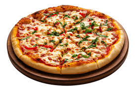

Pizza Recipe

A slice of heaven
Pizza is a savory dish of Italian origin consisting of a usually round,
flat base of leavened wheat-based dough topped with tomatoes, cheese,
and often various other ingredients (such as anchovies, olives, vegetables,
meat, etc.), which is then baked at a high temperature, traditionally in a wood-
fired oven.
Ingredients
- 1 1/2 cups warm water (110°F to 115°F)
- 2 teaspoons sugar
- 2 teaspoons salt
- 1 tablespoon olive oil
- 4 cups all-purpose flour
- 1 packet active dry yeast (2 1/4 teaspoons)
- 1 cup pizza sauce
- 2 cups shredded mozzarella cheese
- Toppings of your choice (pepperoni, vegetables, etc.)
Steps
- In a large bowl, combine warm water, sugar, and yeast. Let it sit for 5-10 minutes until frothy.
- Add salt, olive oil, and flour to the yeast mixture. Mix until a dough forms.
- Knead the dough on a floured surface for about 5-7 minutes until smooth.
- Place the dough in a greased bowl, cover with a cloth, and let it rise in a warm place for 1 hour or until doubled in size.
- Preheat your oven to 475°F (245°C).
- Punch down the risen dough and roll it out on a floured surface to your desired thickness.
- Transfer the rolled dough to a pizza stone or baking sheet.
- Spread pizza sauce over the base, sprinkle with cheese, and add your favorite toppings.
- Bake in the preheated oven for 12-15 minutes or until the crust is golden brown and cheese is bubbly.
- Let it cool for a few minutes before slicing and serving.